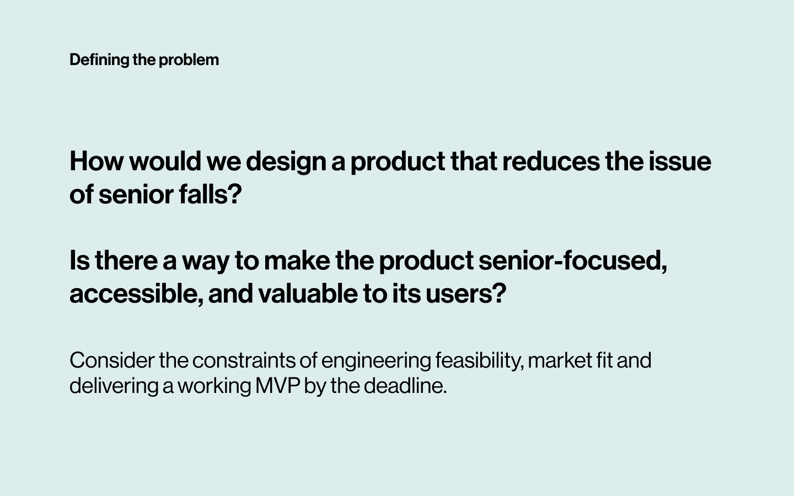
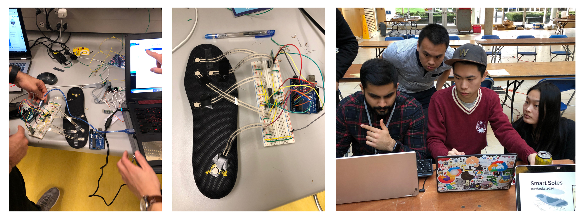

Senior Healthcare: Insoles + App
Project Timeline
September 2019 - April 2020
Project Type
Senior Capstone Design Project
Role
User Research, UX/UI Design, Prototyping
Challenge
Senior healthcare is often more reactive than preventative. How can we help reduce the issue of senior falls in an accessible and consumer-ready way?
Solution
A sensor-embedded insole that tracks balance data, which is then sent wirelessly to its companion app. The senior is then able to recieve personalized exercise recommendations based on their health data.
Outcome
Won the Wolfram Alpha Award at nwHacks 2020.
Sent to compete as semi-finalists at UW Hollomon Health Innovation Challenge 2020 in Seattle. Featured on TV!
Recieved inquiries for early testing at senior centres.

Prevent the problem of falls before it: Wearables in the form of insoles.
Smart Soles is a MVP of insoles embedded with Force-Sensing Resistors (FSRs), machine learning analysis, and a consumer app that works together to reduce the problem of senior falls. I worked in a small team of 6 (Alana la Rue, Christopher Tong, Karen Hong, Ryan Vo, Pranav Arya and myself) as the product and user experience designer from ideation to MVP launch.
The healthcare industry is a tricky space. How can we deliver the help that people desire in a way that is affordable, accurate and adoptable?
Going into this project, my team and I quickly discovered that seniors were an under-supported segment across almost all industries. Meaning that a lot of products aren't designed with seniors in mind - such as apps, tools or hardware. After some research, we discovered that falls resulting from poor balance was a leading cause of senior deaths and injury. However, most seniors are not aware of balance issues and how it could impact their life - until it's often too late.
For the purpose of focusing this case study on the user experience design for the app, some sections are collapsed. Click on the sections to read the full product case study!🤠

Process ↯
Understanding that our team comprised of hardware and software engineers, we wanted to create this product that incorporated both hardware and software. We conducted academic and literature reviews to help determine our technical implementation for data collection and interpretation.
Research Insights
Full product research (read more 🗒)
After determining our engineering capabilities, we started conducting primary and secondary research. Creating a combined hardware and software product was new to the team, so it was important to understand exactly what we were solving for and how we were going to measure progress + success.
To understand the scope of this ecosystem, we conducted about 100 interviews (~70) and surveys (~30), including: seniors, doctors, physiotherapists, adult children (30-50s years old) and grandchildren (<30 years old). This allowed us to see some repeated themes to the questions we had.
How are seniors currently dealing with fall prevention? How are they preventing it - if they are? What would they like to see available as a tool?
Seniors are not aware of how good or bad their balance is.
Balance is a complex interaction between the senses, bodily function, and mental perception.
As we age, our balance begins to deteriorate as a result of one or more of the mentioned interactions. This process is gradual, which leads to many seniors to assume that their balance is still good and that they can function as they always had.
Medical professionals that we spoke to support this finding, indicating that many seniors fall because they believe their balance is accurate, when it is not in reality.
How can we show seniors an accurate and up-to-date status of their balance over time?

There is a dependency on reactive and physical solutions to falls.
Interviews with seniors from senior centres revealed that the most readily available solutions for falls are walking aids eg. canes or walkers. Life Alert or other help aids are also popular solutions.
However, many seniors commented that they tend to become over dependent on walking aids, which can ruin their form (eg. always leaning on a cane) and independence (eg. feeling like they need a cane to walk safely).
Some healthcare professionals also informed us that these solutions do not tackle the root cause of falls, such as weakening muscles or perceptual disorientation.
How can we give seniors a renewed sense of independence that doesn't rely on reactive solutions? How can we flip it to a preventative solution?

What is the buying experience for senior aid tools? Will a product like Smart Soles find a market fit? What are the revenue streams for this product? Can seniors access what we aim to offer?
Senior products are expensive & word of mouth is the way to go.
To purchase a walker or cane, most seniors look to their doctor or specialist recommendations, as well their friends. We were able to identify 3 ranges of senior spenders - those who do not or cannot afford many health products, those who are willing to within a reasonable price, and those who do not put a price on health.
Following the Price Sensitiy Meter technique, our team was able to determine a reasonable price of $300-400 for our soles and app, taking into accountability of COGS and labour. Although arbitrary, this value meant that we could target 2 of the 3 senior spenders - and ensured that our product was more accessible than other smart insole products on the market.
For the market side, there was possibility for Smart Soles to exist and thrive in the wearables space.
Who are our user segments within the senior age range? Can we cater to other demographics?
We've identified 4 user segments: Fall-conscious seniors, post-fall seniors, individuals undergoing treatment and lifestyle optimizers.
The interviews we conducted were open-ended and conducted with a wide range of people, which led us to identify these 4 groups from our data. Fall-conscious seniors are those who have not fallen, but are proactive in preventing falls. Post-fall seniors are individuals who have fallen. We defined seniors as individuals who are around 60+ years old.
The other segments we uncovered where recovering patients, who would benefit from using a tool like Smart Soles. Lifestyle optmizers are on the younger individuals (40s-50s) who are into health and fitness, and would like to reduce the effects of aging as much as possible.
We decided to focus on fall-conscious seniors, as this group had the strongest incentive to use Smart Soles, and it would be acceptable for their lifestyle.

What the heck are we building? And how are we gonna do it? 👨🔧👩💻👩💼👨⚕️
A wearable in the forms of insoles and a companion app.
After multiple idea brainstorms, we settled on an insole form that works with its companion app for this implementation. Our form factor is supported by the fact that it will be discrete and low-maintenance, something remarked after our first round of user interviews and literature review.
Through our technical research, we determined that Force-Sensing Resistors placed along 5 points of balance can help produce a collective balance status. We ruled out using sensor matrices mats or imbedded sensor gels to due budget and data calibration time.
We also considered the behaviour of seniors, which led us to incorporate a bluetooth data transmission component and long-lasting batteries. I'm not an expert on the hardware but it important for us to hypothetically consider the physical use cases of Smart Soles ⚙️
So the plan for Smart Soles was born! Now let's build it 🥳
Smart Sole @nwHacks: Version 1
To put our concept to the test, we made a rudimentary prototype within 24 hours at a hackathon.
We wanted to test/build/achieve:
1)Build the physical insoles - start collecting data
2)Create our ML algorithms
3)Design the app for one goal: retrieve data, interpret data, give result to user
Happy to say, we did it!
Create a solution that is applicable to a wide range of campus facilities issues.
During my brainstorming, I thought about different methods of reporting, such as buttons, a built-in wall interface, alert sensors or apps.
The most optimal solution from that was a digital platform, as buttons, sensors or interfaces would mean that they are powered or limited to buildings. Those applications won’t be useful for reporting issues such as fallen trees or snow blockage.
That led to the question of: which digital platform?
User interviews indicated that most students would not download an app.
The method of reporting should be accessible and flexible for it to be quick and easy to use. This indicated to me that building the student portal as a Progressive Web App (PWA) would be the most optimal solution as it is fast to build, easy to maintain, and send data securely.
However, for the management portal, an app would be a better choice as the requests are daily, more functions need to be performed and the facilities system is complex.
A PWA provided an optimal solution, as the onboarding process for reporting problems can begin by using the phone camera to scan a QR code.
In addition, QR codes can be added anywhere (eg. washroom, outside on a post, at school parking lots, etc.) and can be easily updated. Certain QR codes can also implement geotags, which can further reduce the friction to reporting.
I did not choose a mandatory log-in to school account process because my interviews indicated that students would like an option as to include their identity in a request. A log-in would also take more time and discourage students to report facility issues.

Wireframes: User Flow

For Students:
An analysis of interview data, contextual understanding and user behaviour narrowed the PWA features into 3 problem categories: common issues, specific issues and emergencies.


For Operations & Management
Through the replies from UBC and secondary research, I know that campus operations are managed by many departments, such as: trades, municipal services, custodial services, customer services and more. Each department takes care of different campus facilities and operations.
Maintenance workers are assigned to designated buildings/campus zones.
For this exercise, I will focus on designing an interface geared towards custodians. This means that requests made for a certain building/zone will fall under an assigned custodian’s role. However, for different services, the interfaces will be altered appropriately to reflect their specializations.


Visual: Mockups


Future Considerations: Status & Desktop
The interfaces for messages, history and settings were not created since they will be similar to what a user might typically expect from an app. The history page is simply a record of their resolved requests.
For the status updates, I’ve created a desktop version of what it might look like for students. The desktop version will be an expanded version of the PWA.
When a student is roaming on the map, it will show other submitted requests around on campus.
The current status, request type, location and date will be shown. If there was more time, user testing can be done to see if a feature like this would be something students check on their phones.

But what about student motivation?
After the wireframes were created, I tried to gain quick user feedback by asking a couple students what they think of the PWA portal.
Most of them commented at the ease of use, but some also commented that they would still not report campus facility issues due to low social responsibility and that they would avoid the issue.
To encourage student motivation, school campuses can increase awareness about the cost of facility maintenance (eg. $10, 000 a year is spent on facility repairs. By keeping our school clean and maintained, we can re-allocate these funds to updating our swimming pool.) Rewards or prizes through the PWA can also be an additional incentive.
Measuring impact!
For students: that could mean how many reports have been made, what are the analytics for the PWA and whether the experiences of campus-goers have improved due to better facility management.
For operations: has the workflow improved? are reduncies removed? $$ saved for the school due to more efficient facility management?
If I could further explore this, I would like to investigate how the designs I made will impact the system of campus maintenance, and whether that holds significant value. I’m also curious about how this incorporates service design, and whether this is accessible for people with different needs (who cannot use a phone and QR code to report issues).
This was a fun experience that encouraged me to think about the greater ecosystem that the problem exists in, and how to approach a solution that might not have the greatest user motivation!